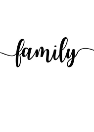

Aktualny status rodziny – jak do tego doszło
Krótko na temat mojej rodziny, choć jest to dość ciekawa historia. Huberta poznałam 5,5 roku temu na spotkaniu z przyjaciółmi, gdzie graliśmy w planszówki. Randkowaliśmy 2 miesiące i oficjalnie zostaliśmy parą. Dość szybko zdecydowaliśmy się na zamieszkanie razem. Już po kilku miesiącach, kiedy wiedzieliśmy, że chcemy dzielić ze sobą życie, podjęliśmy decyzję o dziecku. Pewnie też dlatego, że nadszedł u mnie czas na zmianę kodu na 3 z przodu. Greckie wakacje, relaks i miły czas pomogły, choć może to sprawka wycieczki Huberta na górę, na której była kapliczka, gdzie ludzie modlą się o cud poczęcia. Po dobrej nowinie, oświadczynach (wtedy mój ukochany po raz pierwszy i ostatni ugotował kolację), zaplanowaliśmy ślub cywilny w gronie najbliższych. W tym wyjątkowym dniu Lilianka była już w brzuchu i za 3 miesiące pojawiła się na świecie jako prezent na Dzień Taty. Gdy miała prawie półtorej roku udały się starania o powiększenie rodziny. Miał być Kazik, jednak szybko okazało się, że będzie druga dziewczynka – Aniela. I niech Was nie zmyli to ANIELskie imię, było całkiem odwrotnie. W okresie największej pandemii, gdy wszystkie restauracje były pozamykane zachciało nam się ślubować przed Bogiem. Mini przyjęcie musieliśmy zorganizować w domu. Co zabawne, ksiądz zgodził się udzielić nam ślubu we wtorek, dokładnie 2 lata po naszym pierwszym ślubie, abyśmy mogli obchodzić rocznice ślubów w tym samym dniu. Po narodzinach Anieli życie wywróciło się do góry nogami – była typowym hnb (high need baby). Kto nie zna tego pojęcia, to można zgłębić temat, chyba, że krzyczące dzieci Was nie interesują. Po tym jak Aniela skończyła pół roku było odrobinę lepiej. Jak skończyła rok to już zainteresowała się światem, a nie tylko naszymi rękami. I tak w ciągu tych 5 lat razem mamy za sobą dwa śluby i dwie córeczki na pokładzie.